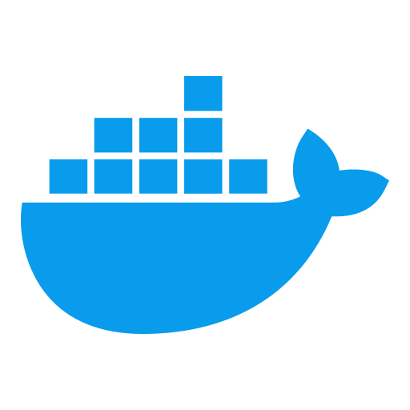
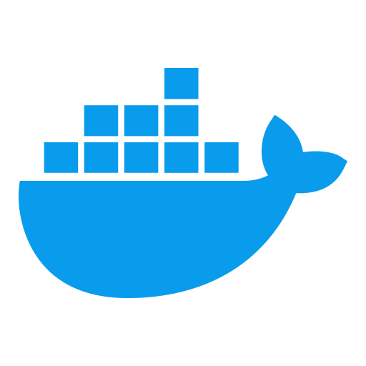
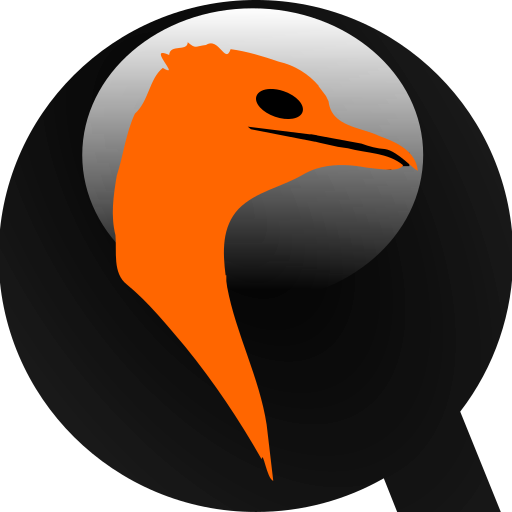

Felix Martins


- Etudiant en BUT2 informatique à l'UGA
- Stagiaire à Open-Prod
- Futur ingénieur Systèmes et Reseaux

Développement d'une application mobile

Développement d'une application mobile

 6 personnes
6 personnes
 600 heures/homme
600 heures/homme
 


En équipe de 6, nous avons dû développer une application mobile avec pour but la mise en avant le patrimoine physique français. Nous avons choisi de mettre en avant les villages remarquables de France dans une application de navigation.
Cadrage et objectifs du projet
Si vous êtes déjà partis en vacances en voiture, vous connaissez les stations-services et savez donc qu'elles ne sont souvent pas aussi reposantes qu'elles devraient l'être. Notre application propose de replacer ces stations-services par des villages présentant un intérêt culturel, architectural, gastronomique... Après avoir entré un départ et une arrivée, l'application calcule un trajet et propose les villages remarquables sur le chemin. Ce résultat est ensuite filtrable selon les services que proposent les villages, par exemple en posant comme contrainte que les villages proposés devraient disposer de toilettes publiques et de bornes de recharge électrique. Il est également filtrable selon l'intérêt du village, permettant par exemple de contraindre les résultats aux villages présentant un intérêt archéologique.
Réalisation et choix techniques
Mon rôle dans ce projet a été de réaliser l'infrastructure qui hébergera les serveurs de l'application. Après la phase de cadrage de projet, au cours de laquelle nous avons décidés des choix techniques et architecturaux, j'ai dû réaliser l'infrastructure de manière containerisée en utilisant Docker. Le projet comprenait deux services principaux qui devaient être hébergés : une API REST lancée dans l'environnement Node.js, ainsi que le SGBD PostgreSQL. Ces deux services sont déployés de manière automatisée sur un serveur Debian à l'aide de Docker Compose. Le projet comprenait aussi des besoins non fonctionnels de sécurité, notamment au niveau de l'isolation des services entre eux et avec l'hyperviseur. N'ayant jamais utilisé de containers, j'ai dû apprendre les principes théoriques ainsi que l'utilisation de Docker au cours du projet.
Installation d'une infrastructure réseau
Installation d'une infrastructure réseau
5 personnes
200 heures/homme
En équipe de 5, nous avons dû concevoir, réaliser et déployer une infrastructure informatique pour une mairie.
Cadrage et objectifs du projet
Ce projet comportait des contraintes fortes imposées par le client ; en particulier, et en lien avec le traitement de données personnelles potentiellement sensibles, la sécurité de l'architecture représentait un point d'attention particulier. Nous avons posé comme pratiques nécessaires la répartition des rôles et responsabilités, le cloisonnement des réseaux, la politique de chiffrement et la gestion des clefs. Durant la phase de cadrage de projet, nous avons utilisé ces pratiques afin d'orienter nos choix logiciels.
Réalisation et choix techniques
Nous avons réalisé l'infrastructure de manière complètement virtualisée en utilisant l'hyperviseur Proxmox. Avec un cluster de 5 hyperviseurs, nous avons implémenté des services réseau de bas niveau comme du DNS, du DHCP et IPAM, mais également des services applicatifs comme un annuaire LDAP, un Wiki ou un serveur NFS kerberisé. Nous avons également installé des outils de monitoring réseau comme Zabbix ou Wazuh.
Ce projet comportait également des contraintes de maintenabilité forte. Cette infrastructure allait servir de base pour l'installation du logiciel de la mairie ; elle devait donc être analysable, modifiable et stable au regard de ces modifications. Nous avons donc fourni avec l'installation une documentation comprenant des descriptions métier des différents services implémentés ainsi que des scripts d'installation client et serveur et des procédures de test à exécuter directement sur l'hyperviseur.
Installation d'une infrastructure réseau
Mise en place d'un environnement de développement virtualisé
1 personne
80 heures/homme

Lors de mon stage, j'ai dû mettre en place un environnement de développement utilisant de la virtualisation.
Cadrage et objectifs du projet
L'entreprise dans laquelle j'ai fait mon stage, Open-Prod, maintenait lors de celui-ci deux versions de son ERP : la v9, utilisant Python 2.7, et la v10, utilisant Python 3.10. Le renouvellement du parc informatique a cependant introduit de nouvelles machines sous Ubuntu 24, qui ne propose pas Python 3.10 dans ses dépôts officiels. Le but du projet a donc été de mettre en place un environnement permettant le développement de la v9, utilisant Python 2.7, sur une machine utilisant Ubuntu 24. La méthode utilisée a dû permettre d'utiliser l'IDE Visual Studio Code pour l'édition de fichiers, l'interprétation et le débogage. Elle a également dû permettre la communication entre le logiciel et un SGBD PostgreSQL. Enfin, une des contraintes imposées par mon maître de stage était l'utilisation de virtualisation.
Réalisation et choix techniques
La solution retenue a dû être performante, fonctionnelle et facile à utiliser. Elle a dû permettre le développement de la v9 du logiciel sans perte de productivité. Elle a également dû émuler le plus fidèlement le comportement d'un interpréteur Python natif à la machine. Enfin, elle a dû être opérationnalisable par des développeurs n'ayant pas de connaissances poussées de la virtualisation. Ainsi, l'environnement de développement du logiciel dans sa version 9 a été reproduit dans une machine virtuelle sous Ubuntu 22 dont l'image a été distribuée. Afin de permettre un développement transparent, de la redirection de port a été mise en place depuis l'hôte pour l'accès SSH et HTTP à la VM, et depuis la VM pour l'accès au SGBD de l'hôte. Enfin, un processus d'installation de l'environnement avec VSCode a été produit afin de mitiger le risque de difficulté d'installation de la part d'un développeur.
Installation d'une infrastructure réseau
Normalisation du cycle de vie des certificats TLS
1 personne
120 heures/homme

Lors de mon stage, j'ai dû réaliser un rôle Ansible permettant de produire, stocker et deployer des certificats TLS.
Cadrage et objectifs du projet
Lors de mon entrée dans l'entreprise, les certificats TLS étaient produits à la main et déployés à l'aide de trois rôles Ansible différents. L'opération de produire des certificats TLS peut être chronophage ; de plus, elle rend le renouvellement prône à l'oubli et le renouvellement par différents opérateurs peut provoquer des duplications de certificats. Certains des rôles utilisés pour déployer les certificats n'avaient pas ce but de base et déployaient des certificats dans le cadre d'opérations plus larges, rendant les effets de bords récurrents. Ainsi, le projet avait pour but de produire un rôle Ansible exécutable à la main ou automatiquement qui pourrait détecter des certificats déjà produits dans un inventaire, produire des certificats, les sauvegarder dans l'inventaire et les déployer sur des machines aux configurations diverses.
Réalisation et choix techniques
Le rôle Ansible produit avait pour but de garder une compatibilité maximale avec Certbot, le client utilisé par l'entreprise jusqu'ici. Ainsi, le rôle Ansible créé/analyse une arborescence similaire à celle utilisée par Certbot afin de détecter les certificats déjà présents. Afin de produire des certificats wildcard, utilisés par l'entreprise, l'utilisation du challenge ACME DNS-01 était nécessaire. Ce challenge requiert la modification d'enregistrements DNS afin de prouver l'autorité sur le domaine à certifier. Le rôle Ansible communique automatiquement avec l'API d'OVH afin d'ajouter puis de nettoyer ces enregistrements. Enfin, après la production des certificats, ceux-ci sont déployés sur les hôtes indiqués dans le hostvar d'Ansible ; les services idoines (Docker, Nginx ou Apache par exemple) peuvent être redémarrés afin de prendre en compte les modifications.
Qui suis-je ?

Entrée à l'IUT2 UGA pour un BUT informatique
Entrée au lycée Ferdinand Buisson, section scientifique
 ▓▓▓▓▓▓▓▓▓▓▓▓▓▓▓▓
▓▓▓▓▓▓▓▓▓▓▓▓▓▓▓▓
 ▓▓▓▓▓▓▓▓▓▓▓▓▓
▓▓▓▓▓▓▓▓▓▓▓▓▓
 ▓▓▓▓▓▓▓
▓▓▓▓▓▓▓▓▓▓▓▓▓▓
▓▓▓▓▓▓▓▓▓▓▓▓▓▓
▓▓▓▓▓▓▓▓▓▓▓▓
▓▓▓▓▓▓▓▓▓▓
▓▓▓▓▓▓▓
▓▓▓▓▓▓▓▓▓▓▓▓▓▓
▓▓▓▓▓▓▓▓▓▓▓▓▓▓
▓▓▓▓▓▓▓▓▓▓▓▓
▓▓▓▓▓▓▓▓▓▓
 ▓▓▓▓▓▓▓
▓▓▓▓▓▓▓
 ▓▓▓▓▓▓▓▓▓▓▓▓▓▓
▓▓▓▓▓▓▓▓▓▓▓▓▓▓
 ▓▓▓▓▓▓▓▓▓▓▓▓
▓▓▓▓▓▓▓▓▓▓▓▓
 ▓▓▓▓▓▓▓▓▓▓
▓▓▓▓▓▓▓▓▓▓
Qui suis-je ?
Passionné depuis toujours par les jeux vidéo et l'informatique, j'ai très tôt voulu devenir développeur de jeux vidéo. J'ai dans ce cadre intégré le lycée Ferdinand Buisson, choisissant comme spécialités l'informatique et les mathématiques. Après avoir obtenu mon baccalauréat mention très bien, j'ai intégré l'IUT2 de Grenoble pour un BUT informatique. Épanoui dans mes études, je suis particulièrement attiré par les aspects de réseau et de gestion de l'informatique.
J'adore apprendre de nouvelles choses et tout faire moi-même : j'ai une montagne de petits projets personnels qui ne sont utiles qu'à moi, comme un bot Discord, un programme de tri de mes playlists Spotify ou encore un script d'automatisation du transfert de ma sauvegarde d'Animal Crossing de ma 2DS vers mon PC. Cette versatilité me permet de maîtriser facilement de nouvelles technologies et de m'adapter à de nouveaux environnements.
En dehors de mes études, je suis passionné de jeux vidéo, mais également de musique que je pratique depuis 10 ans, personnellement et au sein d'un ensemble de percussions dont je fais partie. J'exprime ma créativité à travers la basse, que j'apprend en autodidacte.